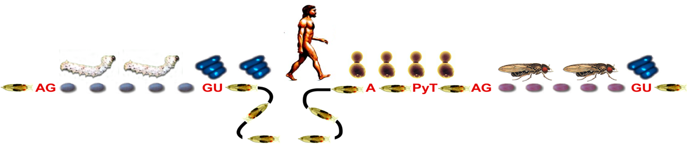

RNA splicing, removal of introns, is an essential step for both coding and non-coding genes during eukaryotic RNA processing. RNA splicing is catalyzed by the spliceosome, a large and dynamic macromolecular machine that consists of five small nuclear RNAs and >100 proteins. Both splicing fidelity and efficiency are important for generating accurate mRNAs, and thereby functional proteins. Including alternative splicing, trans-splicing, back splicing and minor splicing, multiple styles of intron selection may generate multiple RNA isoforms from one gene, and are critical for development and differentiation. Furthermore, aberrant splicing that caused by mutations in splicing factors or cis-elements in RNA sequences has been found in many human diseases.
Using yeast, fly, mice and mammalian cell lines as working systems, our group has been interested in:
1) Splicing proofreading by ATPases/RNA helicases;
2) Regulatory mechanism in alternative splicing, trans-splicing, back splicing and minor splicing;
3) Splicing regulation in fruit fly development and human diseases;
4) Conserved intronic motifs and their evolution;
5) Coupling between splicing and transcription.

真核生物的前体RNA经转录形成后，通过RNA剪接步骤去除其中的内含子并将外显子连接起来，才能形成有功能的成熟RNA。RNA剪接是基因表达过程中的一个必需步骤，对细胞分化、组织器官形成和个体生长发育起着重要的调节作用。我们实验室目前的研究方向主要有：
1）RNA解旋酶调控的剪接保真性机制；
2）多种形式的RNA剪接的发生机制，如选择性剪接，反式剪接，反向剪接和次要剪接；
3）果蝇发育和人类疾病过程中的RNA剪接调控；
4）内含子中高度保守基序的进化与功能；
5）RNA剪接与基因转录的偶联机制。